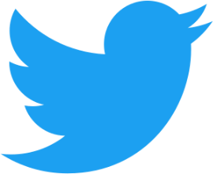

Amazing feminsit movements have been created and influenced by social media like Twitter, Instagram, and YouTube. How impactful has social media been on feminism?
Feminism is strongly known for beginning in the early eighteen hundred resulting later with the 19th amendment introducing the womens' right ot vote,
and then with the second wave feminism in the sixties
and seventies with the more aggressive feminism. Today a new feminism has emerged and has become more widespread, especially with the power of social media. This new wave of feminism has
used social media to it's full potential, bringing issues to light, giving platforms for discussions. The more level playing field that social media creates gives women a fair platform
compared to other media outlets. This new frontier has created feminist discussions bringing people from all walks of life together for a common goal.
Social media has encouraged people to speak out about what is wrong and what we can do together to fix it. The modern-day feminist has used social media to the fullest, using it to organize and bring women together and representing women different than the traditional media. With the power of social media it can be used to bridge the gap that women are born with. The awareness raised through social media has started the conversation that needed to be had in the first place.
Now online there are more feminist resources for people to use through social media. There are plenty of podcasts, websites, accounts, etc. that help convey the feminist message of equality. Social media can be used to help change the social perception that is associated with the classic stereotype of being a feminist. Because of the casual media forms feminism can now be in, it is less formal and can be less intimidating for people that want to use their voice. It is now easy for people to provide information for people that want to learn more about feminism.
Some famous movements that have been created by hashtags are "#WhyIStayed", "#NotBuyingIt", "#YesAllWomen". These have gone viral on Twitter, very influential in changing peoples views. The way it has mobilized the public has been incredible. The topics discussed have ranged from sexual abuse to domestic abuse, and rape, these are only a few. Women have a chance to change the narrative that has been given to them, but this way their voices can grow and be heard.
Online media is the future, and younger feminists are already instrumental in using social media and multi-media platforms on the web to document street harassment, archive and critique the media, and create art.-Jennifer Baumgardner


The Women's Suffragette Parade of 1913
| Movement | Time Period of Movement | Main Purpose |
| First Wave | 1830s | Inequality, no vote, social justice |
| Second Wave | 1960s | Women in work force, gender equality, abortion |
| Third Wave | 1990s | Feminine empowerment, sexual harassment |
Title: "Council on Foreign Relations, June 2018"
Title: "How social media is changing the feminist movement"
History and Theory of Feminism

© Kelly Newbrough, ken16b@my.fsu.edu